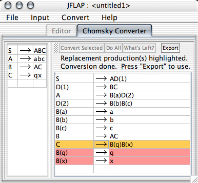

This action is the final of four steps in transforming a grammar to Chomsky normal form (CNF). The goal is to reform the grammar so that it generates the same language as the original, but is in Chomsky normal form. A grammar in Chomsky normal form (CNF) has all productions be either to two variables, or a single terminal.
The converter works as follows: the user starts with the original grammar, and repeatedly converts productions that are not CNF already. It works rather simply on two cases.
The first case is if a production has multiple symbols in its right hand side with at least one of those symbols as a terminal. In this case, any terminal symbols are converted to variables like so: for any terminal , a production B() will be introduced, and the variable B() will replace in the original production.
The second case is if a production has more than two variables in its right hand side, but no terminals. For example, take ABCDE. In this case, that production is replaced with the two productions ABD(n) and D(n)CDE, where n is some positive integer. One would then have to convert the D(n)CDE production.
This process is repeated until there are no productions that are not in CNF form.
As a note, the CNF converter will attempt to introduce as few new productions as it can, and will attempt to reuse existing variables and productions wherever possible.
"Convert Selected" will take any production currently selected in the grammar editing view, and break it down via the method listed above; double clicking on a production accomplishes the same effect. "Do All" will make the grammar CNF in one fell swoop. "What's Left?" will highlight those productions that remain to be converted. "Export" is available only when the grammar is CNF, and will take this reformed grammar and put it in its own window.